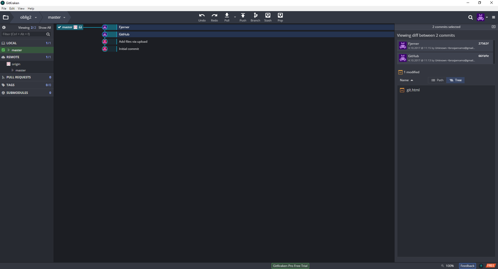
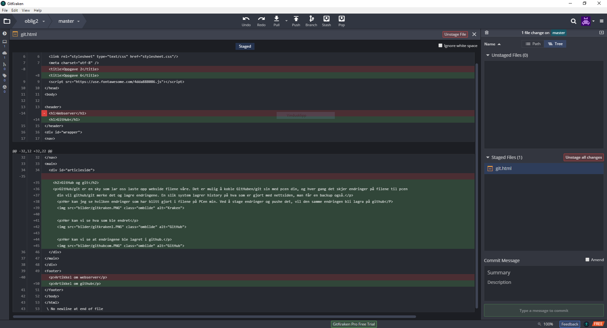
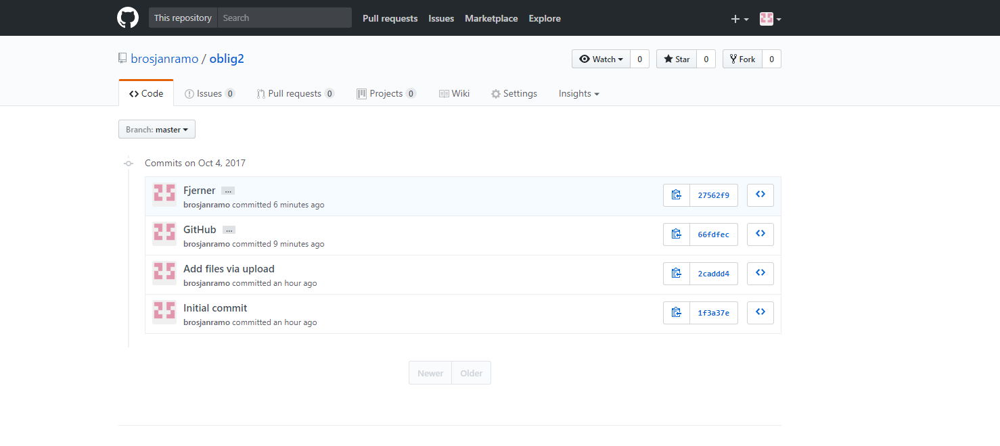

GitHub og git
GitHub/git er en sky som lar oss laste opp webside filene våre. Det er mulig å koble GitHuben/git sin med pcen din, og hver gang det skjer endringer på filene til pcen din vil github/git merke det og lagre endringene. En slik system lagrer history på hva som er gjort med nettsiden, man får en backup også.
Her kan jeg se hvilken endringer som har blitt gjort i filene på PCen min. Ved å stage endringer og pushe det, vil den samme endringen bli lagra på github
Her kan vi se hva som ble endret. Det grønne er det som ble lagt til og det røde er det som ble fjernet
Her kan vi se at endringene ble lagret i github.
